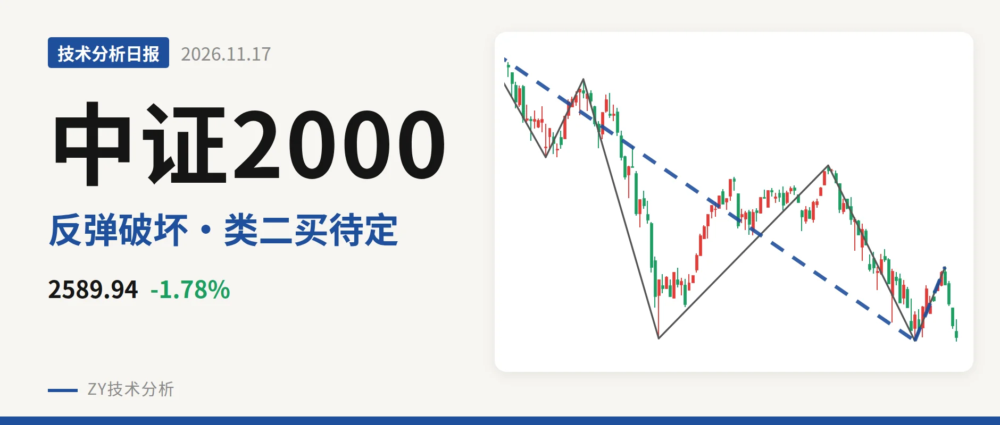
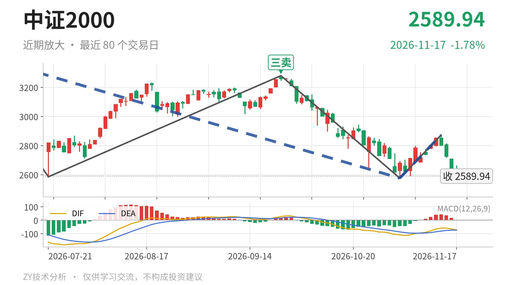

中证2000｜反弹笔破坏，2576点一线失而复得

最近日线中枢 3381.36—3593.19点，收盘位于中枢之下
一句话：反弹笔被破坏，下跌延续，2576点一线影响短线结构。
📉 走势结构：日线下跌线段延续，反弹笔破坏
当前主结构是5月14日以来的日线线段下跌。该线段从3768.08点至2576.02点，跌约31.6%，还在延续。更大级别看，5月14日以来的下跌走势同样没有结束。前一段2024年2月6日至今年5月14日的上涨段之后，已经形成反向日线线段。11月2日至11月12日的反弹只有一笔，不构成线段。11月13日至11月17日最高2816.80点、最低2573.21点，低点跌破2576.02点，反弹笔被破坏，新一笔下跌正在延续。

🧭 中枢与位置：最近笔中枢下移，长线尚有支撑
最新收盘2589.94点，位于1月26日至3月23日日线笔中枢下方。该中枢区间为3381.36—3593.19点，最新价距下沿约791点，低23.4%。9月22日三卖3280.29点正是反抽该中枢下沿失败的位置。更大级别线段中枢上沿2437.36点仍在最新价下方约152点，长线结构尚未完全破坏，但日线笔级别已明显走弱。
⚠️ 买卖点：高位卖点逐级降低，类二买暂定
日线笔级别中，5月14日一卖3768.08点、6月23日二卖3626.48点、9月22日三卖3280.29点，一个比一个低。这说明上涨段结束后的反抽逐级衰竭。11月2日的线段级别类二买2576.02点，所在线段仍在延续，且随后价格创新低2573.21点，这个类二买只能算暂定，会随所在线段的延续而变化。

🔍 背驰：同向下跌出现“新低不新弱”
在5月14日以来的日线线段内，取同向下跌笔比较。6月23日至7月21日绿柱面积810、DIF低点-164.2；9月22日至11月2日绿柱面积873、DIF低点-108.5。价格小幅新低，但DIF低点抬高，绿柱面积没有同步放大，属于“新低不新弱”。不过11月2日反弹只有一笔且已被破坏，这个背驰只是小级别反应。当前下跌仍在延续，需等新一笔完成后再比较力度是否继续减弱。
🎯 关键位置：2576点一线为短线分水
当前上方最近压力看2872点附近，即11月2日反弹笔高点。更上方看3280点附近，对应9月22日三卖。下方2576点一线若再度失守且反抽站不回，结构上仍是5月14日以来下跌线段的延续。若价格重新站上2872点，则更可能进入中枢扩展而非直接修复日线笔中枢。综合看，最新价低于最近日线笔中枢下沿23.4%，反弹笔被破坏，结构偏弱。
⚠️ 本文为基于公开行情数据的缠论技术结构记录，由程序自动计算并生成，仅供学习交流，不构成任何投资建议。市场有风险，投资需谨慎。